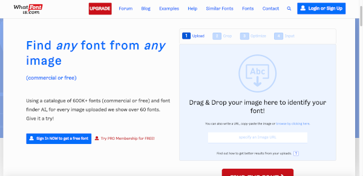

WhatFontIs
- Acesse WhatFontIs
- Arraste e solte uma imagem que contenha texto
- Use as ferramentas do site para destacar o texto que você quer identificar
- Encontra a(s) fonte(s) que mais se aproxima(m) da fonte usada no texto da sua imagem

Voltar à página anterior.
Voltar à página inicial.